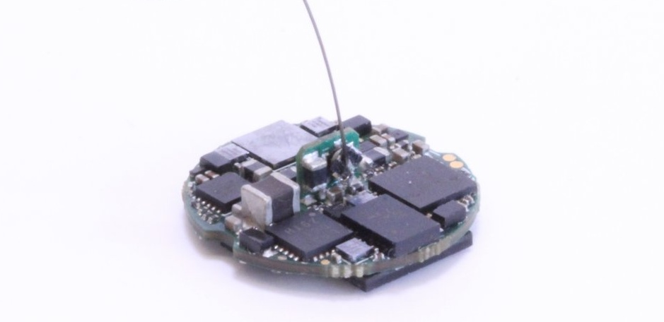

Headstage-64#
Headstage-64 is a 1.5g serialized, multifunction headstage for small animals. This headstage is designed to function with EIB-64 for tetrode microdrives. Alternatively it can be used with other passive probes (e.g. silicon arrays, EEG/ECOG arrays, etc) using 64-Channel Omnetics Adpater or similar.
{kind=link}
Warning
There are multiple headstage hardware revisions. The revision number is printed on the PCB. You can use the compatibility matrix to find host hardware for your headstage.
Features#
64 analog ephys channels and 3 auxiliary channels sampled at 30 kHz per channel
A BNO055 9-axis IMU for real-time, 3D orientation tracking
Four TS4231 light to digital converters for real-time, 3D position tracking with HTC Vive base stations
An electrical stimulator (current controlled, +/-15V compliance, automatic electrode
discharge)
Two optical stimulators (800 mA per channel)
An Intel MAX10 FPGA for real-time data arbitration
Data Link Serializaiton#
For details on data serialiation and headstage gateware, have a look at the Coaxial Data Serialization & Power page, which describes how coax headstages operatate in general terms. Headstage-64 has the following coaxial link properties:
Parameter |
Value |
Min |
Max |
Unit/ Type |
|---|---|---|---|---|
FPGA |
Intel 10M08DFV81 |
|||
Serializer |
TI DS90UB933 |
Coaxial |
||
Supply Voltage |
5.0 |
5.0 |
6.3* |
Volts |
Hub Clock Frequency |
42 |
MHz |
Warning
*Do not exceed 6.3 VDC at the coaxial input to the headstage. Make sure you make this measurement at the headstage (see: :ref: Measuring headstage voltage) to account for a potential voltage drop in the tether. Exceeding this voltage can permanently damage the headstage.
Note
Have a look at the Making Coaxial Tethers page for more detials on mirco-coax headstage tethers
Electrophysiology & Auxiliary Analog Inputs#
headstage-64 uses a 64-channel, BGA-packaged Intan RHD2164 bioamplifier chip. The chip is operated at a fixed sampling rate of 30 kHz/channel (including auxiliary channels). Specifically, it provides:
64x ephys channels which are exposed via a mezzanine connector on the bottom of the headstage and can be used to record from most passive probes (e.g. tetrodes, silicon probe arrays, tungsten microwires, steel EEG wires, etc) - 3 auxiliary channels
2x auxiliary channels (0.1-2.45V input range) are pinned out on the bottom of the headstage to an unpopulated mezzanine connector and solder-able test points
A 3rd auxilary analog channel is tied to the electrical stimulator’s current measurement circuit via a selectable solder jumper on the bottom of the board. This jumper can be desoldered and instead a series resistor added to allow low-frequency LFP recordings as per pg. 26 of the RHD2000 datasheet.
Attention
The headstage connector pinout (ADC input mapping, stimulation connections, etc) is located on this Google sheet.
3D Position Tracking#
Todo
Move this into its own page
headstage-64 has four SteamVR receivers for 3D position tracking.
Warning
These receivers are compatible with both V1 and V2 (“index” branded) basestations. Although the firmware we supply for the headstage can be used to obtain 3D position from kinds of basestation, we consider V1 basestations deprecated and cannot guarantee future functionality.
Assuming you are using V2 basestations, to set up tracking,
Mount each of the basestations so that they have a clear line of sight to as much of the behavioral space as possible. For a relatively flat arena, the simplest configuration is to mount two basestations directly above the behavioral space inline and separated by 0.5 to 1 meters. For more complex environments more than 2 basestations are required to get full coverage, any configuration is possible so long 2 basestations have a line of site to the headstage and are no more than 4 meters away. For this, there are lots of options for ready-made, adjustable basestation mounts availble on Amazon and elsewhere.
Serial into each of the basestations using the USB connection on the back and set up a terminal connection using
screen /dev/ttyACM0 115200or similarOnce connected you can hit Tab to see commands
Set the mode of of each base staiton to a different value using
mode nwherenis the desired mode (1-16). The only requirement is that each basestation have a unique mode.
Note
If a basestation loses power, it will reset to mode 1. Its best to just leave the basestations plugged in and untouched to minimize the need to for re-calibration and mode programming
TODO: obtain the position and orientation of each basestations
3D Orientation Tracking#
headstage-64 has a BNO055 9-axis inertial measurement unit that provides the absolute orientation of the headstage. This device produces orientation (and other) measurements are 100 Hz.
Neural Stimulation#
headstage-64 provides onboard electrical and optical stimulatus generators. Stimulus trains can be parameterized in a similar way to the master-8 or pulse pal.
Note
To achieve the shortest latency, electrical or optical stimulation can be triggered using the GPIO1 serializer output. Because both stimulators share this trigger line, it is important to only enable one of the devices (using its ENABLE register) prior to toggling this pin.
Optical Stimulation#
Optical stimulation is provided by a dual-channel, high-current LED driver. This driver can be used for LEDs or laser diodes. It provides 800-mA per channel. The cathodic connections can be paralleled to increase max current. The maximum peak current in 1.6 Amps. However, if you deliver this current for a significant amount of time, the headstage will shutdown due to an over-temperture condition. The optical stimulator is only appropriate for low duty-cycle pulse-type stimulation.
Electical Stimulation#
The electrical stimulation cicuit is an improved Howland current pump followed by an precision current measurement circuit. The current pump is supplied by +/-15V rails and can supply up to +/- 2.5 mA. The output current is defined as:
Warning
The headstage must be supplied by 5.5V, measured at the DC couping inductor, to use electrical stimulation. If the voltage is less than this, stimulus pulses will fail to acheive target currents and this will result in charge imblance, which can damage neural tissue.
ISTIM = (VDAC - 2.5)/1000.
e.g.
VDAC = 2.5 -> ISTIM = 0
VDAC = 5.0 -> ISTIM = 2.5 mA
VDAC = 0.0 -> ISTIM = -2.5mA
Imeas = 400 * ISTIM + 1.25V
e.g.
ISTIM = 0 -> IMEAS = 1.25V
ISTIM = 2.5mA -> IMEAS = 2.25V
ISTIM = -2.5mA -> IMEAS = 0.25V
Bill of Materials#
The interactive BOM is here
The complete BOM (including vendor part numbers) is located on this google sheet